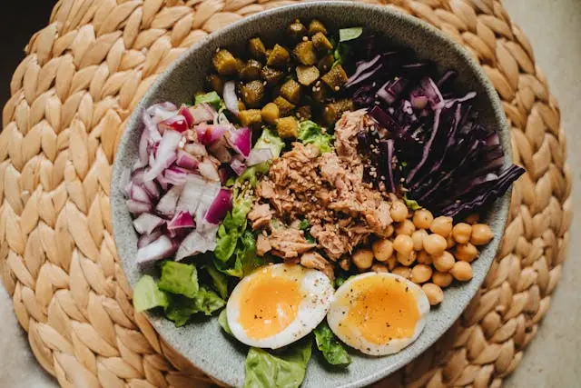

My Health Journal
Health Made Easy
Home
My Journal
Health Tips
Health Tips
27 Natural Health and Nutrition Tips That Are Evidence-Based
25 Simple Tips to Make Your Diet Healthier
107 Healthy Dinners That Are Ready in 40 Minutes or Less

How superfoods work (plus a list of the best superfoods)
Tips for Long-term Exercise Success
Staying Motivated to Exercise: Tips for Older Adults
18 Excellent Yoga Tips for Beginners
Tips for Building a Healthy Relationship
Sleep tips: 6 steps to better sleep
Social Wellness Toolkit
8 Ways to Take Care of Your Spiritual Health
Top 13 meditation tips